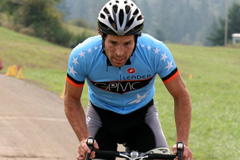

GPMC Series Info:
The Grand Prix Molly Cameron is a Cyclocross Series composed of nine independently promoted CX races. These great independent races kick off the OBRA Cyclocross season and run through the very end in December. Riders from any state are welcome to race the GPMC. Series overall awards and prizes will be handed out at the GPMC series end party, the first week of December. Come experience some amazing cyclocross courses, competitive racing, and exciting new race venues.
Races
- David Douglas #1 9/3/11
- Hood River Double Cross 9/17/11
- Heiser CX 10/8/11
- Ninkrossi 10/15/11
- Het Meer CX 10/22/11
- David Douglas #2 10/29/11
- Apple Core Cross 11/5/11
- Psycho CX/OBRA Champs 11/19/11
- Winter Cross 12/4/11
Categories
Mens Beginners
Category C, Clydesdale*
Masters Category C 35+
Masters B 35+, Masters 50+, Masters 60+, Jrs 12+
Kiddie Kross A&B
Category A Men & Women, Masters Category A 35+
Women: Category B, Beginners
Masters 35+ A, B, & 45+, Jrs 12+
Category B and Single Speed
Promoter and/or officials reserves the right to change your category.
(* Clydesdale=200+ lbs.)
Fees:
A series pass is available before the first race of the series. All series passes must be purchased at or before race #1. After the series starts, normal pre-registration and day-of registration will be at the individual promoter's instructions.
Juniors: $45 series/9 races
All other categories: $180 series/9 races
Points:
The best seven out of nine placings in the series will count in the final tally (dropping the two races with the fewest points). Riders must race in at least 5 races for the overall series. Series prizes will be awarded at the series end party. There will be no BAR points for the series, only the individual races.
Grand Prix M.C. Points are awarded 18 deep in each race.
Points structure is - 26, 20, 16, 15, 14, 13, 12, 11, 10, 9, 8, 7, 6, 5, 4, 3, 2, 1. Reminder: only your top 7 results count and a minimum of 5 race results needed to have a series overall final ranking.
Podiums/Leaders Jersey:
A short podium ceremony will follow each finish at the races. A GPMC leaders jersey provided by Castelli will be awarded to the leader of select categories during a short podium ceremony after their race. The points leader of each category is required to wear their leader's jersey while they maintain their lead.
Registration
Three ways to register and purchase the series pass:
Mail in: Fill out the OBRA Race Release and mail checks payable to:
Zone 5 Promotions, LLC
3201 NE 72nd Drive, Suite 9, PMB #318
Vancouver, WA 98661
Online Pre-registration: The deadline for a full series registration has passed, but you can follow "register" links on the race list above to register online for each event.
Day of first race: Register at the event, but arrive early enough to get in line. Day-of-event registration for each individual race will be available at each race venue, and will be based on the independent promoters' fee structure. You can find online registration links on the individual race flyers. Save time by printing out an OBRA waiver (PDF) and completing it at home.
Memberships & Licenses
OBRA membership required for all riders. Single race memberships are available for $5.00. Season OBRA memberships are available for $20.00. Junior season memberships are free.
Prize List:
A combined prize list well over $5,000 across the series. Every series race provides their own prize list at each individual race (cash and/or merchandise). MetaFilter will be provding a $2,000 Cash award for Elite men's and women's final series podium finishers ($500 1st/$300 2nd/$200 3rd). Equal payout.
Updates
GPMC #9: Wintercross
 Today's inaugural Wintercross race was a great success. A fun rolling course with a bit of mud, a bit of speed, and a bit of climbing that offered challenges to all. The day started cold and foggy but gave way to sunny skies and warmer temps, making it a fun day for all.
Today's inaugural Wintercross race was a great success. A fun rolling course with a bit of mud, a bit of speed, and a bit of climbing that offered challenges to all. The day started cold and foggy but gave way to sunny skies and warmer temps, making it a fun day for all.
OBRA results are posted and photos from the event are rolling in (1, 2, 3, 4, 5, 6)
Stay tuned for final point tallies on the series (don't forget Tuesday night's awards party!).
Season ending party Dec 6!
 This Tuesday, December 6th at 7pm:
This Tuesday, December 6th at 7pm:
Upper Echelon Fitness
1420 NW 17th Ave
Portland, OR 97209
There will be free beer, food, and prizes for those coming early, Elite class "A" winners and runner ups can collect their payouts as well. See you there at Upper Echelon on Tuesday!
GPMC #8: Psychocross/OBRA Championships
 The penultimate GPMC tour stop started off cold and muddy outside of Eugene this past weekend. The course was technical, tacky, rocky, and offered up so much singletrack that starts and field positioning were key to maintaining placing and nabbing an OBRA champion jersey.
The penultimate GPMC tour stop started off cold and muddy outside of Eugene this past weekend. The course was technical, tacky, rocky, and offered up so much singletrack that starts and field positioning were key to maintaining placing and nabbing an OBRA champion jersey.
OBRA has the full results and there are photos from various photographers (1, 2, 3)
GPMC #7: Applecore Cross
 The first rain and mud of the season brought real cyclocross weather to EZ Orchard's Applecross just outside of Salem. 191 racers made the trip and rode through fruit trees, up muddy rollers, and over hay bale pyramid obstacles.
The first rain and mud of the season brought real cyclocross weather to EZ Orchard's Applecross just outside of Salem. 191 racers made the trip and rode through fruit trees, up muddy rollers, and over hay bale pyramid obstacles.
OBRA results are posted and there are a few photos from the day: (1, 2)
GPMC #6: David Douglas #2
 A chilly foggy morning turned into a nice sunny day for racing out at David Douglas park. The various costumed riders provided the highs, the killer long run-up provided the lows, thanks to all the sponsors and racers for making it another fun day of cross racing.
A chilly foggy morning turned into a nice sunny day for racing out at David Douglas park. The various costumed riders provided the highs, the killer long run-up provided the lows, thanks to all the sponsors and racers for making it another fun day of cross racing.
Full results from OBRA are up as well as some photos: (1, 2, 3)
GPMC #5: HET MER
 Reports of the Euro-inspired cyclocross course at Het Mer are coming in as one of the best events of the season, with twists, turns, flat out sprints, and a giant sand pit to run across.
Reports of the Euro-inspired cyclocross course at Het Mer are coming in as one of the best events of the season, with twists, turns, flat out sprints, and a giant sand pit to run across.
OBRA results have been posted and there are many photos (1, 2, 3, 4) from the event.
GPMC #4: Ninkrossi
A fast hilly course featuring the ever-present "N" greeted riders along with a day of warm temps at GPMC stop #4.
OBRA results are here and photos are available here (Dave Roth, David Mackintosh, Jose Sandoval).
Current standings for the series are now up on the OBRA site!
GPMC #3: Heiser Farms
 Heiser Farms gave us a fast tacky course with a few muddy spots and a great day in the sun on the farm. Full results are posted at OBRA.
Heiser Farms gave us a fast tacky course with a few muddy spots and a great day in the sun on the farm. Full results are posted at OBRA.
Some photos from the event: 1, 2, 3, 4
There's also some video of the Junior Race Series
GPMC #2: Hood River
 The second stop on the GPMC tour is over and the full results are posted at OBRA. It was a great course featuring multiple run-ups, a few sand pits, and long snaking singletrack runs with climbs to match.
The second stop on the GPMC tour is over and the full results are posted at OBRA. It was a great course featuring multiple run-ups, a few sand pits, and long snaking singletrack runs with climbs to match.
Here are some photos from the event: (1, 2, 3).
If you're interested in knowing where you stand in the series, the series results are posted at OBRA.
New GPMC Shirts for sale!
 We printed up one run of light blue shirts for race volunteers and friends and heard so much good feedback on them that we ran another shirt printing run, this time to sell at GPMC events. The shirts are high quality American Apparel tees with a single GPMC logo on the front and we will be selling them for $10 starting tomorrow at Hood River Double Cross. Look for the giant box of shirts somewhere near the Upper Echelon tent and either Molly Cameron or David Saltzberg who will be selling them throughout the series.
We printed up one run of light blue shirts for race volunteers and friends and heard so much good feedback on them that we ran another shirt printing run, this time to sell at GPMC events. The shirts are high quality American Apparel tees with a single GPMC logo on the front and we will be selling them for $10 starting tomorrow at Hood River Double Cross. Look for the giant box of shirts somewhere near the Upper Echelon tent and either Molly Cameron or David Saltzberg who will be selling them throughout the series.
GPMC #1: David Douglas
 A great open to the season and thanks goes out to the 365 racers that came out to kick off our series (more thank yous from organizer David Saltzberg on the OBRA list).
A great open to the season and thanks goes out to the 365 racers that came out to kick off our series (more thank yous from organizer David Saltzberg on the OBRA list).
Full results from the race are at OBRA and Oregon Cycling Action covered the event as well.
Photos are available from a variety of photographers: (1, 2, 3, 4, 5, 6, 7).
GPMC is on Twitter, Facebook
Follow GPMC on Twitter for news, tips, reactions, and retweets from racers throughout the season. There is a GPMC event listing on Facebook as well.